SIGGRAPH 2018 Neural Best-Buddies: Sparse Cross-Domain Correspondence
| Kfir Aberman 1 | Jing Liao 2 | Mingyi Shi 3 | Dani Lischinski 4 | Baoquan Chen 3,1 | Daniel Cohen-Or 5 |
| 1 AICFVE, Beijing Film Academy | 2 Microsoft Research Asia | 3 Shandong University | 4 The Hebrew University of Jerusalem | 5 Tel-Aviv University |
|
|
| Top 5 Neural Best-Buddies for two cross-domain image pairs. Using deep features of a pre-trained neural network, our coarse-to-fine sparse correspondence algorithm first finds high-level, low resolution, semantically matching areas (indicated by the large blue circles), then narrows down the search area to intermediate levels (middle green circles), until precise localization on well-defined edges in the pixel space (colored in corresponding unique colors). |
Correspondence between images is a fundamental problem in computer vision, with a variety of graphics applications. This paper presents a novel method for sparse cross-domain correspondence. Our method is designed for pairs of images where the main objects of interest may belong to different semantic categories and differ drastically in shape and appearance, yet still contain semantically related or geometrically similar parts. Our approach operates on hierarchies of deep features, extracted from the input images by a pre-trained CNN. Specifically, starting from the coarsest layer in both hierarchies, we search for Neural Best Buddies (NBB): pairs of neurons that are mutual nearest neighbors. The key idea is then to percolate NBBs through the hierarchy, while narrowing down the search regions at each level and retaining only NBBs with significant activations. Furthermore, in order to overcome differences in appearance, each pair of search regions is transformed into a common appearance.
We evaluate our method via a user study, in addition to comparisons with alternative correspondence approaches. The usefulness of our method is demonstrated using a variety of graphics applications, including cross-domain image alignment, creation of hybrid images, automatic image morphing, and more.
Downloads:|
|
| At each level, pairs of strongly activated, mutual nearest neighbors, neurons are extracted from deep feature maps of a pre-trained CNN. The correspondences are propagated to the image pixel level in a coarse-to-fine manner, where at each consecutive finer level, the search area is determined by the receptive fields of the NBBs in the previous layer. |
Cross-domain Correspondence |
|||||||
| 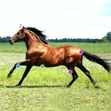 | 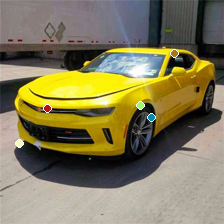 | 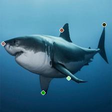 | 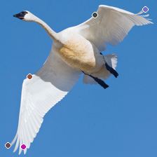 | 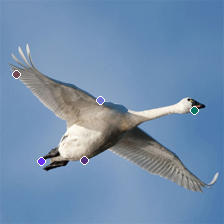 | 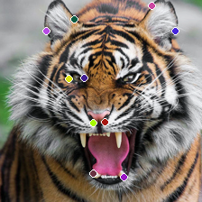 | 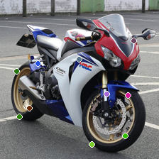 | 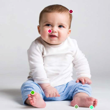 |
| 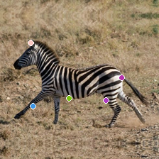 | 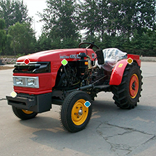 | 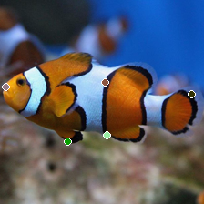 |  |
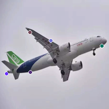 | 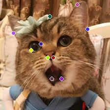 | 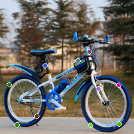 | 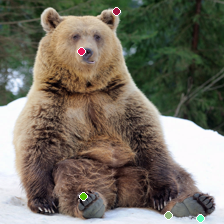 |
Top k correspondences |
Different pose |
Different scale |
|||||
| 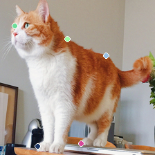 | 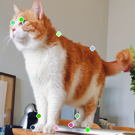 | 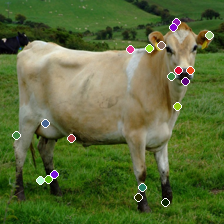 | 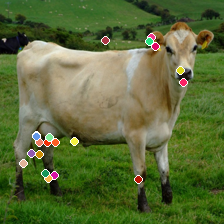 | 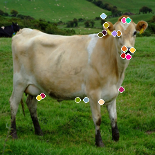 | 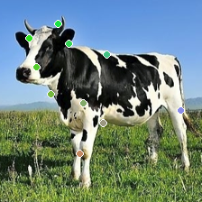 | 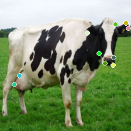 | |
| 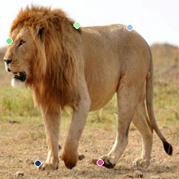 | 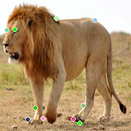 | 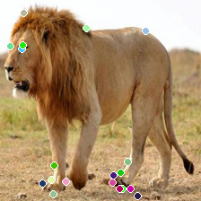 | 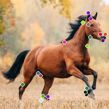 | 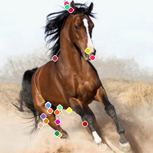 | 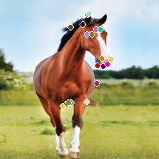 | 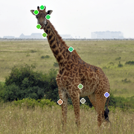 | 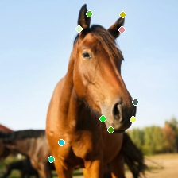 |
Image Hybridization
| 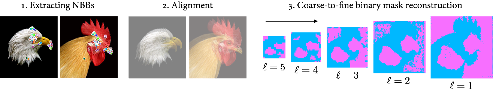 |
| 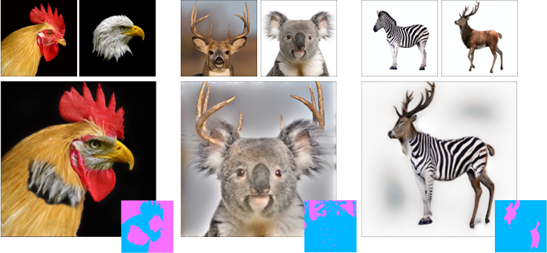 |
Image Morphing
| 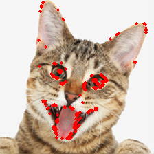 | 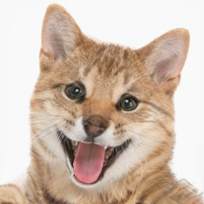 | 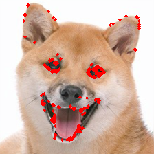 | |||||
| 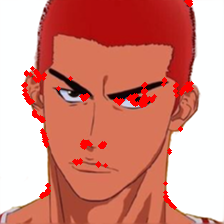 | 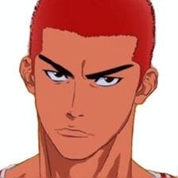 | 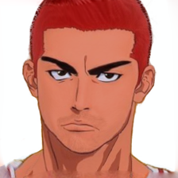 |  |
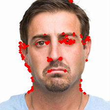 | |||
| 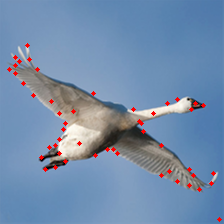 | 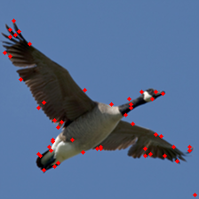 |
@article{aberman2018neural, author={Aberman, Kfir and Liao, Jing and Shi, Mingyi and Lischinski, Dani and Chen, Baoquan and Cohen-Or, Daniel}, title = {Neural Best-Buddies: Sparse Cross-Domain Correspondence}, journal = {ACM Transactions on Graphics (TOG)}, volume = {37}, number = {4}, pages = {69}, year = {2018}, publisher = {ACM} }
We thank the anonymous reviewers for their helpful comments. This work was supported by National 973 Program (No. 2015CB352500) of China, the Israel Science Foundation (2366/16), and the ISF-NSFC Joint Research Program (2217/15, 2472/17).